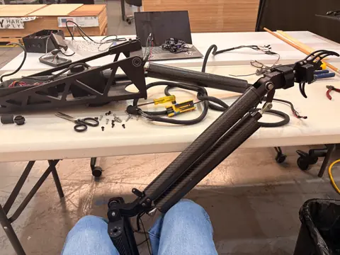

NASA MARSHALL · OSTEM 2026
Robotics for lunar-dust testing.
At NASA Marshall, I worked across robotic-arm control, calibration, and high-vacuum thermal analysis. My assessment connected motion and environmental constraints to test planning, with findings documented against system requirements. The work was an engineering evaluation, not a claim of vacuum-qualified hardware.
34system requirements
6test scenarios
10⁻⁷torr vacuum target